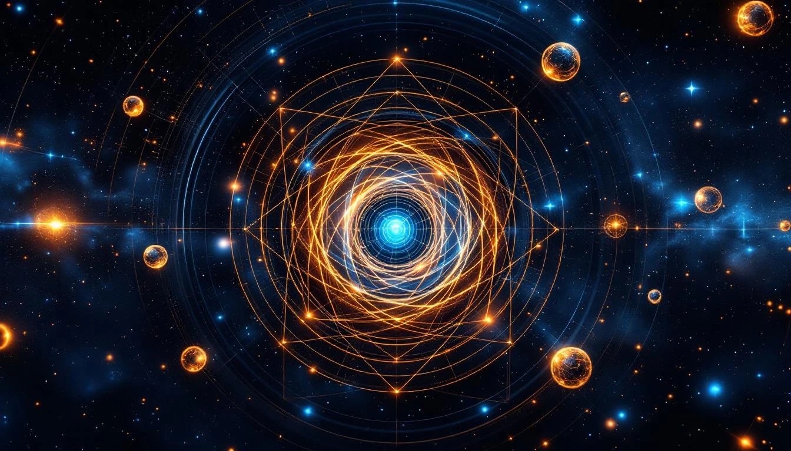

NUCLEAR SHELL CLOSURE
Just as electrons fill shells around the nucleus, protons and neutrons fill shells WITHIN the nucleus. When these nuclear shells close, the nucleus becomes exceptionally stable.
The numbers at which shells close are called magic numbers: 2, 8, 20, 28, 50, 82, and 126.
The Magic Numbers
Magic Number | Shell Closure
-------------|-------------------
2 | 1s shell (He nucleus)
8 | 1p shell (O-16 core)
20 | 1d shell (Ca-40)
28 | 1f₇/₂ subshell
50 | 2d + 1g subshells
82 | 2f + 1h subshells
126 | 2g + 1i subshells
Nuclei with magic numbers of protons
AND/OR neutrons are extra stable.
DOUBLY MAGIC NUCLEI
When both the proton count AND the neutron count are magic numbers, the nucleus is doubly magic - extraordinarily stable:
| Nucleus | Protons | Neutrons | Notes |
|---|---|---|---|
| ⁴He | 2 | 2 | Alpha particle |
| ¹⁶O | 8 | 8 | Most common oxygen |
| ⁴⁰Ca | 20 | 20 | Stable calcium |
| ²⁰⁸Pb | 82 | 126 | Heaviest stable nucleus |
Lead-208 is doubly magic: 82 protons + 126 neutrons. The heaviest stable element.
THE 1729 CONNECTION
The magic numbers connect to the fold structure:
Magic Number Patterns
Sum of first 4 magic numbers:
2 + 8 + 20 + 28 = 58
Sum of all standard magic numbers:
2 + 8 + 20 + 28 + 50 + 82 + 126 = 316
1729 / 316 ≈ 5.47 ≈ √30 ≈ √κ'
The magic numbers relate to 1729
through the square root of the
rotation quantum.
WHY THESE NUMBERS?
The magic numbers arise from the nuclear shell model, which includes spin-orbit coupling. This coupling splits energy levels and creates the observed shell closures.
In fold terms, these are positions where the nuclear fold achieves perfect harmonic closure - where the standing wave patterns of nucleons reinforce rather than interfere.